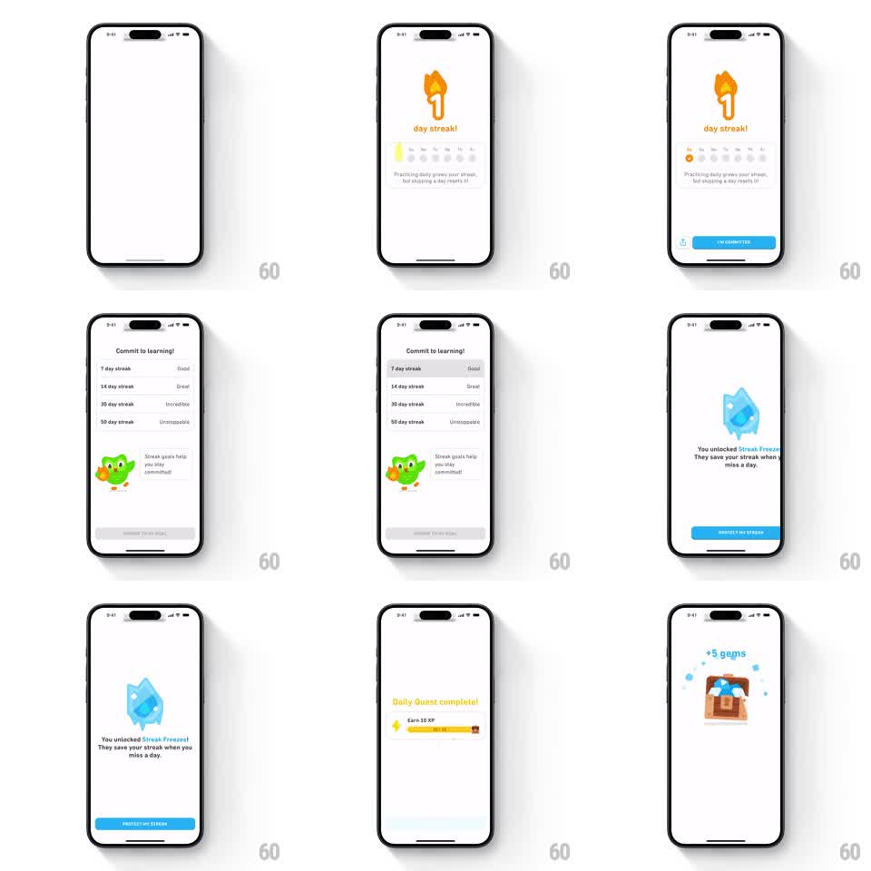

Media
Frame-by-frame

Rebuild this interaction 1:1: Duolingo's streak-commitment flow - a flame counter celebrates the new streak, the user picks a streak goal from a springy list, and the flow pays out rewards in stages: Streak Freeze unlock, Daily Quest progress, and a gem chest.

Rebuild this interaction 1:1: Duolingo's streak-commitment flow - a flame counter celebrates the new streak, the user picks a streak goal from a springy list, and the flow pays out rewards in stages: Streak Freeze unlock, Daily Quest progress, and a gem chest. ## Integration Integration: stack-agnostic spec - springs given as stiffness/damping, timed motions as duration + curve; map every value to your framework and animation library of choice. ## Scene Stage 1: white screen, orange flame holding a white streak number, "day streak!" headline, a row of weekday circles that fills in, explainer copy, blue I'M COMMITTED button. Stage 2: "Commit to learning!" goal list - rows for 7/14/30/50 day streaks with tier labels (Gold, Great, Incredible, Unstoppable), Duo with a hint bubble, CHOOSE THIS GOAL button disabled until a row is picked. Stage 3: blue ice-cube "You unlocked Streak Freezes!" screen with PROTECT MY STREAK button. Stage 4: "Daily Quest complete!" XP progress bar. Stage 5: wooden chest spilling gems under a "+5 gems" label. ## Motion spec Pattern: multi-stage commitment and reward cascade. - Flame stage: the flame pops in (scale 0.5 to 1.0, spring stiffness ~320, damping ~18), then weekday circles fill left to right, 80ms apart, each a 150ms scale pop. - Goal list rows enter staggered from the bottom (~60ms apart, translateY 20px to 0, 250ms, ease-out). Tapping a row highlights it (gray pill background, 150ms) and enables the button (gray to blue, 150ms). - Stage transitions are full-screen pushes with bounce: new stage slides up and settles (spring stiffness ~280, damping ~24). - Reward stages chain automatically: ice cube scales in with a spin (rotation -8deg to 0, ~400ms spring), the XP bar fills (width 0 to 100%, 600ms, ease-out), and the chest bursts open with gems popping out on individual springs (~250ms each, staggered 60ms). ## Calibration - Each stage is one beat - keep the pacing snappy (1.5 to 2 seconds per stage) so the chain feels like a cascade, not a wizard. - Buttons appear only on input stages; reward stages advance on their own. ## Reduced motion Stages crossfade (200ms); fills and pops become instant state changes. ## Don't miss - The streak number lives inside the flame silhouette. - The goal button stays disabled until a row is chosen - the commitment must be explicit.